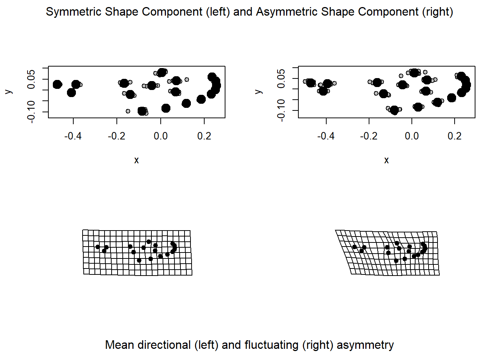

Analysis of Bilateral Symmetry
Mark A. Conaway
Introduction
Bilateral symmetry is a fundamental feature of most organisms. This refers to the idea that some biological structure is repeated in a different position or orientation, meaning that the arrangement in space of some structures is at least partially redundant (Klingenberg et al., 2002). There are two types of bilateral symmetry that the reader should be aware of. The first is matching symmetry, where a symmetric structure is present in two separate copies found on the left and right side of the body (i.e. a mosquito’s wings). The second is object symmetry, where a single structure is symmetric itself along the midsagittal plane (i.e. a vertebrate skull). The approach to analyzing data with each of these types of symmetry is somewhat different.
The asymmetry of a structure can also be of interest, particularly in terms of the developmental origins of shape variation (Klingenberg et al., 2002). Asymmetry can manifest in a dataset as directional, whereby consistent difference is skewed toward one side, perhaps as a reflection of difference in function (i.e. crab claws). Asymmetry can also be fluctuating which reflects instability during development.
The geomorph function bilat.symmetry allows the user to
quantify components of shape variation as described by their patterns of
symmetry and asymmetry. In particular, the function decomposes shape
variation into variation among individual, variation among sides
(directional asymmetry), and variation due to the interaction between
individual and side (fluctuating asymmetry). Each of these components
are then evaluated using Procrustes ANOVA.
Simply accounting for symmetry in a sample can be extremely important as well. In a highly symmetrical structure like a cranium, one can run into issues like ill-conditioning of the covariance matrix. This function can be used to extract the symmetric components of shape variation to address this problem, but this method is explained in a different tutorial.
bilat.symmetry()
\(A\): A 3D array of either raw, or Procrustes-aligned landmark coordinates OR a
gpagenobject, that is, the output from thegpagenfunction.\(ind\): A vector containing labels for each individual:
lizards$ind## [1] 29 29 30 30 31 31 32 32 33 33 34 34 35 35 36 36 37 37 38 38 39 39 40 40 41 41 42 42 43 43 44 44 45 45 46
## [36] 46 47 47 48 48 49 49 50 50 51 51 52 52 53 53 54 54 55 55 56 56 57 57 58 58 59 59 60 60 61 61 62 62 63 63
## [71] 64 64 65 65 66 66 67 67 68 68 69 69 70 70 71 71 72 72 73 73 74 74 75 75 76 76 77 77Here, the levels indicate different individuals, whose landmarks on
sided elements have been repeated.
- \(side\): An optional vector (for matching symmetry) designating which object belongs to which side.
mosquito$side## [1] 1 2 1 2 1 2 1 2 1 2 1 2 1 2 1 2 1 2 1 2 1 2 1 2 1 2 1 2 1 2 1 2 1 2 1 2 1 2 1 2- \(replicate\): A vector that identifies which objects belong to which group of replicates:
lizards$rep## [1] 1 2 1 2 1 2 1 2 1 2 1 2 1 2 1 2 1 2 1 2 1 2 1 2 1 2 1 2 1 2 1 2 1 2 1 2 1 2 1 2 1 2 1 2 1 2 1 2 1 2 1 2 1
## [54] 2 1 2 1 2 1 2 1 2 1 2 1 2 1 2 1 2 1 2 1 2 1 2 1 2 1 2 1 2 1 2 1 2 1 2 1 2 1 2 1 2 1 2 1 2\(object.sym\): Logical value (TRUE/FALSE) indicating whether analysis should be based on object symmetry (TRUE) or matching symmetry (FALSE).
\(land.pairs\): In the case of object symmetry, this argument contains a matrix indicating numbers for matched pairs of landmarks across the line of symmetry:
lizards$lm.pairs## [,1] [,2]
## [1,] 13 14
## [2,] 2 11
## [3,] 15 16
## [4,] 27 28
## [5,] 3 10
## [6,] 17 19
## [7,] 4 9
## [8,] 20 21
## [9,] 22 24
## [10,] 5 8
## [11,] 6 7
## [12,] 25 26\(data\): A geomorph data frame with relevant data for this analysis. Specifically, the data frame \(must\) include variables for “ind” “side” and “replicate” as shown above.
\(seed\): Optional argument for setting the seed for random permutations of the resampling procedure. If seed = “random,” P-values for statistical comparisons will vary when the function is run multiple times on the same data. If left NULL (the default) P-values will be the same for repeated runs of the function, as long as the number of iterations (iter) remains the same.
\(print.progress\): A logical value (TRUE/FALSE) to indicate whether a progress bar should be printed to the screen. This is helpful for long-running analyses.
Example Analysis: Matching Symmetry
Using a dataset of landmark coordinates taken from mosquito wings, below is an example of an analysis using this function on data with matching symmetry. In this case, the argument “object.sym” will be set to FALSE (as it is by default). The structure of the arguments for “ind,” “side,” and “replicate,” are illustrated above.
mosq.sym <- bilat.symmetry(mosquito$wingshape, ind = mosquito$ind, side = mosquito$side,
replicate = mosquito$replicate, object.sym = FALSE, print.progress = FALSE)Results can be summarized using the base R function
summary
summary(mosq.sym)##
## Call:
## bilat.symmetry(A = mosquito$wingshape, ind = mosquito$ind, side = mosquito$side,
## replicate = mosquito$replicate, object.sym = FALSE, print.progress = FALSE)
##
##
## Symmetry (data) type: Matching
##
## Type I (Sequential) Sums of Squares and Cross-products
## Randomized Residual Permutation Procedure Used
## 1000 Permutations
##
## Shape ANOVA
## Df SS MS Rsq F Z Pr(>F)
## ind 9 0.104888 0.0116542 0.45533 2.6901 1.53968 0.061 .
## side 1 0.003221 0.0032209 0.01398 0.7435 -0.47265 0.681
## ind:side 9 0.038990 0.0043323 0.16926 1.0407 0.27074 0.390
## ind:side:replicate 20 0.083259 0.0041629 0.36143
## Total 39 0.230358
## ---
## Signif. codes: 0 '***' 0.001 '**' 0.01 '*' 0.05 '.' 0.1 ' ' 1
##
##
## Centroid Size ANOVA
## Df SS MS Rsq F Z Pr(>F)
## ind 9 4.1497e-09 4.6107e-10 0.18555 0.8452 -0.21500 0.592
## side 1 3.4740e-10 3.4738e-10 0.01553 0.6368 0.22432 0.437
## ind:side 9 6.9569e-09 7.7299e-10 0.31108 1.4170 0.70241 0.237
## ind:side:replicate 20 1.0910e-08 5.4549e-10 0.48784
## Total 39 2.2364e-08The summary output shows results for a shape ANOVA and Centroid size
ANOVA. For a more detailed explanation of the ANOVA output, see the
tutorial on Procrustes ANOVA. Additionally, results can
be plotted using the base R function plot:
plot(mosq.sym)
The top row of this figure shows the symmetric (left) and asymmetric
(right) components of our data. The bottom row illustrates, via TPS
diagram, the directional (left: variation among sides) and fluctuating
(right: variation due to an individual x side interaction) asymmetry of
our data.
Example Analysis: Object Symmetry
When the argument “object.sym” is set to TRUE, the function performs an analysis of object symmetry. Remember in this case, that an object identifying landmark pairs is required.
scallop.sym <- bilat.symmetry(scallops$coorddata, ind = scallops$ind, object.sym = TRUE,
land.pairs = scallops$land.pairs, print.progress = FALSE)Results of an analysis with object symmetry can likewise by
summarized using the base R function summary
summary(scallop.sym)##
## Call:
## bilat.symmetry(A = scallops$coorddata, ind = scallops$ind, object.sym = TRUE,
## land.pairs = scallops$land.pairs, print.progress = FALSE)
##
##
## Symmetry (data) type: Object
##
## Type I (Sequential) Sums of Squares and Cross-products
## Randomized Residual Permutation Procedure Used
## 1000 Permutations
##
## Shape ANOVA
## Df SS MS Rsq F Z Pr(>F)
## ind 4 0.126060 0.031515 0.64135 9.8318 5.4476 0.001 **
## side 1 0.057671 0.057671 0.29341 17.9918 2.0350 0.011 *
## ind:side 4 0.012822 0.003205 0.06523
## Total 9 0.196552
## ---
## Signif. codes: 0 '***' 0.001 '**' 0.01 '*' 0.05 '.' 0.1 ' ' 1The base R function plot returns a visualization of
directional and fluctuating asymmetry in our data. In this case, since
the data are three-dimensional, an interactive 3D plot is generated.
Within R, this will be opened in a separate window.
plot(scallop.sym)This function generates an object of class “bilat.symmetry” which is a list, whose objects can be accessed separately using the $ operator:
bilat.symmetry() Output
- \(shape.anova\): An analysis of variance table for the shape data.
- \(size.anova\): An analysis of variance table for the shape data (when object.sym = FALSE).
- \(symm.shape\): The symmetric component of shape variation.
- \(asymm.shape\): The asymmetric component of shape variation.
- \(DA.component\): The directional asymmetry component, found as the mean shape for each side.
- \(FA.component\): The fluctuating asymmetry component for each specimen, found as the specimen specific side deviation adjusted for the mean directional asymmetry in the dataset.
- \(signed.AI\): Individual signed asymmetry index, as per Klingenberg and McIntyre, 1998; Lazić et al 2015.
- \(unsigned.AI\): Individual unsigned asymmetry index, as per Klingenberg and McIntyre, 1998; Lazić et al 2015.
- \(data.type\): A value indicating whether the analysis was performed as Object or Matching symmetry.
- \(permutations\) The number of random permutations used.
- \(random.shape.F\): A matrix of random F-values from the Shape analysis.
- \(random.size.F\): A matrix of random F-values from the Centroid Size analysis (when object.sym = FALSE).
- \(perm.method\): A value indicating whether “Raw” values were shuffled or “RRPP” performed.
- \(procD.lm.shape\): A list of typical output from an object of class procD.lm, for shape
- \(procD.lm.size\): If applicable, a list of typical output from an object of class procD.lm, for size (when object.sym = FALSE).
- \(call\): The matched call (input code).
Advanced Options
- \(RRPP\):
- \(SS.type\):
- \(turbo\):
- \(Parallel\):